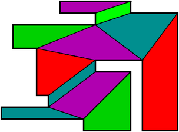

|

|
|
Abstract:
In this paper we study the diffuse reflection diameter and diffuse reflection radius problems for convex-quadrilateralizable polygons. In the usual model of diffuse reflection, a light ray incident at a point on the reflecting surface is reflected from that point in all possible inward directions. A ray reflected from a polygonal edge may graze that reflecting edge but an incident ray cannot graze the reflecting edge. The diffuse reflection diameter of a simple polygon P is the minimum number of diffuse reflections that may be needed in the worst case to illuminate any target point t from any point light source s inside P. We show that the diameter is upper bounded by (3n-10)⁄4 in our usual model of diffuse reflection for convex-quadrilateralizable polygons. To the best of our knowledge, this is the first upper bound on diffuse reflection diameter within a fraction of n for such a class of polygons. We also show that the diffuse reflection radius of a convex-quadrilateralizable simple polygon with n vertices is at most (3n-10)⁄8 under the usual model of diffuse reflection. In other words, there exists a point inside such a polygon from which (3n-10)⁄8 usual diffuse reflections are always sufficient to illuminate the entire polygon. In order to establish these bounds for the usual model, we first show that the diameter and radius are (n-4)⁄2 and ⌊(n-4)⁄4⌋ respectively, for the same class of polygons for a relaxed model of diffuse reflections; in the relaxed model an incident ray is permitted to graze a reflecting edge before turning and reflecting off the same edge at any interior point on that edge. We also show that the worst-case diameter and radius lower bounds of (n-4)⁄2 and ⌊(n-4)⁄4⌋ respectively, are sometimes attained in the usual model, as well as in the relaxed model of diffuse reflection.
|

![[PHOTO]](../../images/knight_small.png)